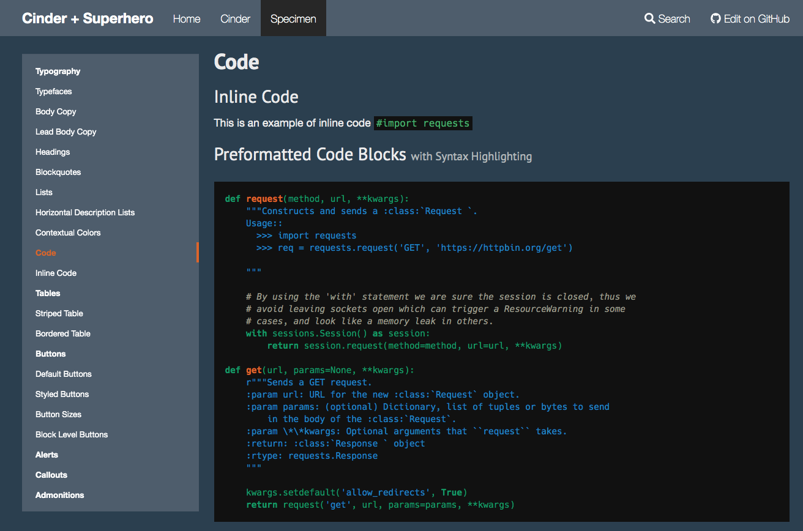

A Superhero-inspired theme based on Cinder for MKDocs
- Cinder: http://sourcefoundry.org/cinder/
- Superhero: https://bootswatch.com/superhero/
- MKDocs: https://www.mkdocs.org
This is how documentation will look like:

Usage:
- Install MKDocs according to https://www.mkdocs.org/#installation
- Run
mkdocs serveto host a live version of your documents, watch them at http://localhost:8000/ - Run
mkdocs buildto make a static web page out of your documentation insidesite - Edit the documentation markdown files in
docsto make your own documentation
Why? Why???
The original Cinder implementation is great but has some design decisions which are fixed here:
- For a privacy-aware implementation we do not want any external links. Therefore all context, loaded by CDNs or other sources (google etc.) had been either removed or completely embedded. This MKDocs theme is now privacy-aware!
- The very bright appearance of Cinder does not fit Programming-oriented colour styles where we prefer a dark appearance. As a reference the superhero implementation is the best place to steal styles and colours. So this is like the dark version of Cinder.